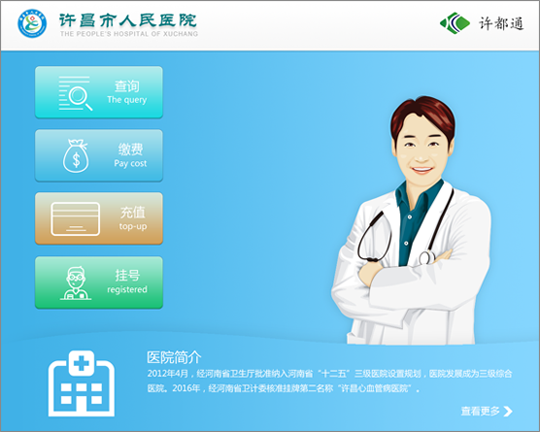

后台管理
- 利恩便于实时数据部署自助终端和云服务器之间的交流,提供实时性能报告。
- 后台系统
- 利恩应用程序后台管理
- 对设备进行统一的查看和运行故障的管理功能
- 直观的仪表盘管理工具简化网络设置和日常管理任务包括:
- 支持软件更新和升级
- 终端管理、用户管理和安全
- 系统业务报告和统计
利恩以“科技先导、管理一流、品质优胜、服务至上”作为公司的经营理想；秉承求实、创新、诚信的企业精神，用现代化的管理体制与国际先进水平保持同行，不断提升企业的国际化经营能力和自有知识产权的核心技术创新能力，实现“成为世界一流自助服务设备整体解决方案服务商”长期战略目标，树立全球性的强势品牌。

医疗软件
- 自助社保终端软件已经成功部署全国医院提供挂号和缴费服务。 终端软件功能包括:
- 优化医院发卡、挂号、缴费充值业务流程，提高医院运作效率和质量
- 减少挂号、收费窗口，节省空间和人力成本
- 有效收集、更新病人信息，实时监控病人流向和数量
- 患者自助打印化验报告，减少医院人力成本及管理成本
- 患者加快挂号、缴费、与查询打印的速度，减少排队等候时间
- 改善就诊体验，提高满意度
- 自助打印检验结果，减少排队等候时间
- 银行加强与医院的合作
- 减少现金交易，提高资金周转
售卖软件
- 自动零售售货平台包括一套复杂的软件用于提供一个增强客户体验,优化后增加效率。
- 销售界面
- 定制的消费用户界面提供广泛的指导销售和产品选择信息。丰富的产品信息促进独立的采购决策,而提升销售提示可以增加平均订单大小。销售应用程序提供消费者与品牌选择竞争对手一个在线订购的经验从终端立即交货。
- 分层的应用程序功能,收入提高应用程序可从第一天,或可以逐步添加到部署。
- 广告和优惠券交付-广告内容和可选的移动/打印优惠券可以大大提高销售
- 支持微信、支付宝、NFC等移动支付和银行卡、现金等多种支付方式。
- 支持线上下单线下取货。

社保软件
- 社保自助服务平台可根据客户需求进行定制，实现各种功能包括：
- 社保证明打印
- 社保卡查询
- 居民参保查询
- 缴费变更申报
- 申请预约业务
- 年度工资申报
- 基本信息调整
- 查询打印服务
- 自助缴费
- 身份认证等功能
- 社保卡信息查询
- 社保银行卡交易查询
- 人员参保信息查询
- 个人缴费明细等功能